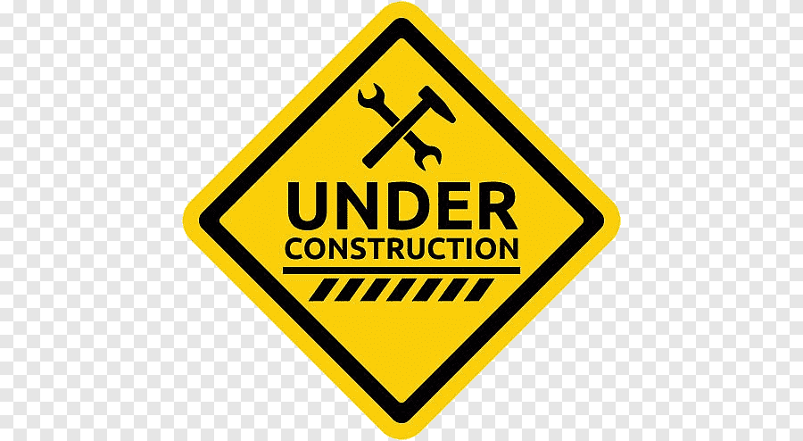

EggWorld SMP
play.eggworldmc.net
Come and play on EggWorld, a vanilla+ survival server made just for you! Relive the days of playing on a small SMP server, only with modern features and improvements!
Plugins and Features
The server has a few plugins and data packs to make the server as fun and functional as possible. Some of the notable inclusions are
- Teleporting, banning, chatting, you know.
- Claim land using a simple tool to protect your builds/bases from griefers. Click here for a guide.
- Take down entire trees and veins of ore by sneaking while you break one of the blocks while using an axe or pickaxe.
- Various Vanilla Tweaks Features
- Since phantoms are disabled on the server, there is normally no way to get phantom membranes for use in potions. This data pack fills the need, causing bats to drop phantom membranes when killed.
- Crates a gravestone near the spot where you last died. No need to worry about items despawning or losing your favorite tools to lava!
- Craft horse armor and name tags like any other item.
- Stairs and slabs can be crafted back into normal blocks.
- Rotten flesh can be smelted into leather.
- Returns fishing to its pre-1.16 loot table.
- Adds an effective tool to all the items you thought had one, but never actually did.
Rules
- No hacking or cheating. Use of glitches, a hacked client, or modded game to gain an unfair advantage over other players or to bypass server limitations is a bannable offense.
- Griefing on unclaimed land is allowed. Claiming and protecting your land is free, click here for a guide.
- No lag machines/structures designed to hinder the server performance are allowed. This includes excessively large mob farms and complex redstone machines.
- Do not bombard new players with teleport requests or free items, especially mid to late game items like enchanted tools, ender chests, and shulkers.
- Absolutely NO bigotry, hate speech, or bullying is allowed at the expense of any group or individual.
- If you would like to discuss “heavy” topics (religion, politics, etc.) keep it to private messages.
Punishments
Punishments will be determined based on the rules broken and severity of the offenses at the discretion of moderators and administrators. However, you can generally expect to receive a kick or verbal warning with an opportunity to correct the behavior (remove destructive build, destroy illegitimate items, or simply apologize to a player you have treated wrongfully,) followed by a temporary ban with forced correction (administrator removal of builds/items etc.) Repeat offenders will be given a permanent ban.
Do you feel that you were wrongfully banned or punished? Click here to put in an appeal to be reviewed by an administrator.